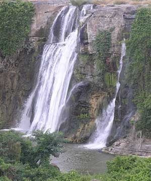
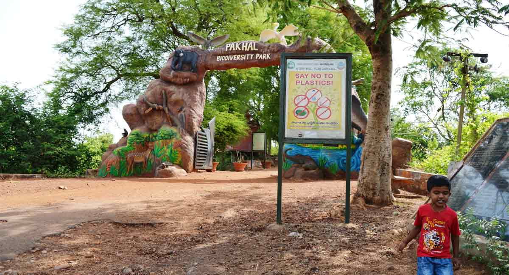
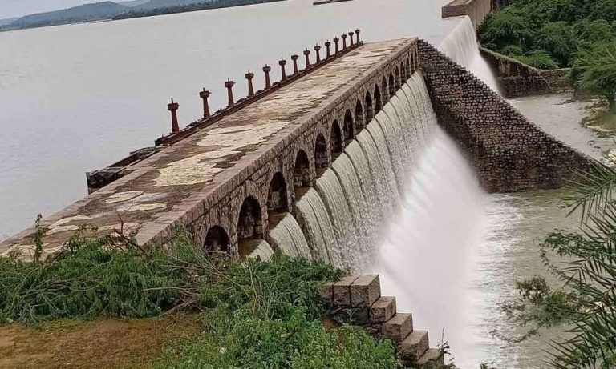

Kuntala Waterfall
The Kuntala Waterfalls is located 12 kms from the Neredikonda villege, about 64 km from Adilabad. At Kuntala,the Kadem river cascades 45 meters down and rushes deep into the Jungles. Kuntala, the highest waterfalls in the State, offers a spectacular sight particularly when the river is flush with copious inflows. The winter months are ideal for witnessing the waterfalls, as one can also see the river in all its glory. There is an image of Lord Shiva near the water falls known as Someshwara Swami. Many devotees congregate here for Maha Shiva Ratri festivities.
For more Information click on the link: Kuntala
Pakhal Lake
Located at a distance of around 50 km from Warangal city, Pakhal Lake is a popular place to visit. Spread across an area of 30 sq. km amid the flourishing greenery of forests and hills, this lake offers breathtaking picturesque site. A perfect place for families to come and spend quality time together, Pakhal lake is equally apt for nature enthusiasts. Sounds of bird chirping, refreshing breeze and a mesmerising scenery greets you at Pakhal lake Warangal. It is man-made lake which was built during kakatiya rule. This lake was built in 1213 AD by the Kakatiya King Ganapati Deva. It was built to serve as source of water for irrigational purpose. It was built on a tributary of River Krishna. Pakhal Lake Warangal has become a popular place for tourists to visit and relax. It's mesmerising natural beauty and peaceful surroundings make it an ideal place to spend a few tranquil moments. The enchanting beauty of this lake can be easily seen in Pakhal lake photos.
For more Information click on the link: Pakhal Lake
Pocharam Wildlife Sanctuary
Pocharam Forest & Wildlife Sanctuary is situated at a distance of 15 km from Medak and around 115 km from Hyderabad, Telangana, India. Tourists can avail of private transport to reach the sanctuary from Medak. Pocharam Forest was reported to be a favorite hunting ground for the Hyderabad Nizam who had declared it as a wildlife sanctuary as early as the beginning of the 20th century. The sanctuary gets its name from the Pocharam Lake formed after the construction of Pocharam dam on Allair river between 1916 – 1922. The sanctuary is spread over 130 square kilometers. Surrounded by lush green forest, the place has rich flora and fauna attracting winged visitors such as Brahminy Bucks, Bar-Headed Goose, and Open Billed Stork. The place is an ideal spot eco-tourism where visitors can enjoy spotting five species of Antelopes and Deer. The sanctuary is home to animals like Wild Dog, Leopard, Wolf, Jackal, Forest Cat, Sloth Bear, Sambar, Nilgai, Chinkara, Chital, and four-horned Antelope. The ideal season to visit is October to May and for accommodation, tourists can book the inspection bungalow at Pocharam and Medak. Forest rest house at Medak.
For more Information click on the link: Pocharam Wildlife Sanctuary